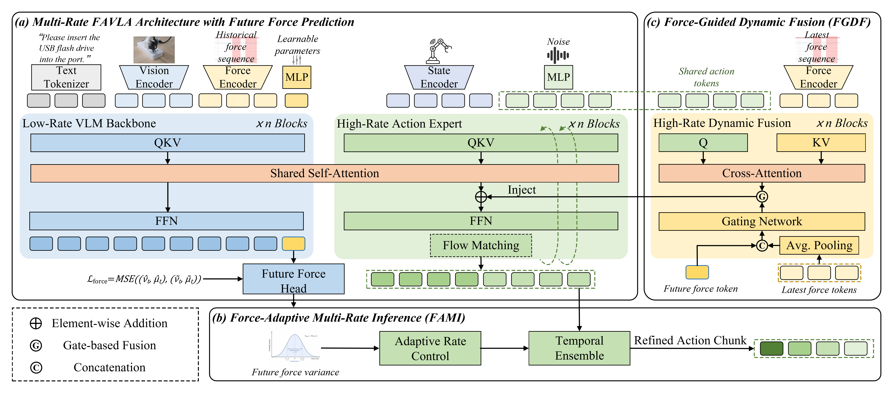
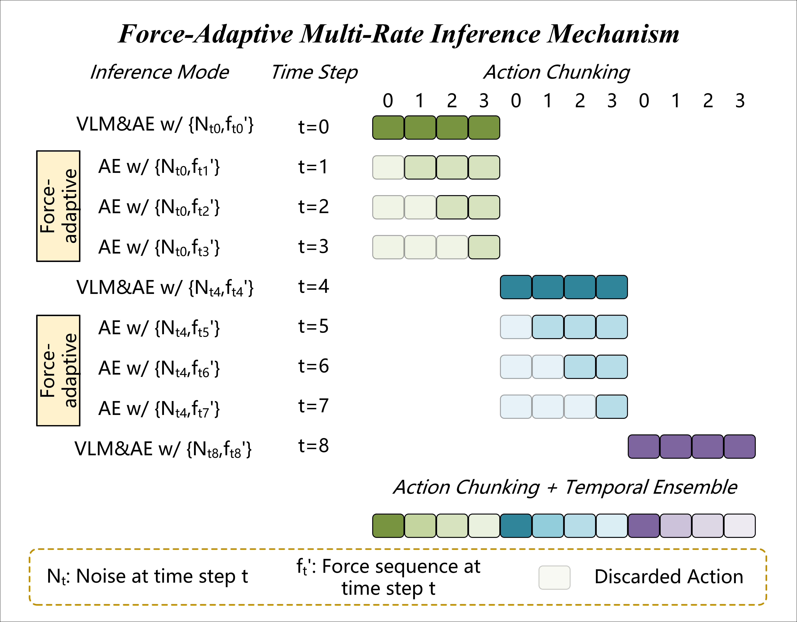
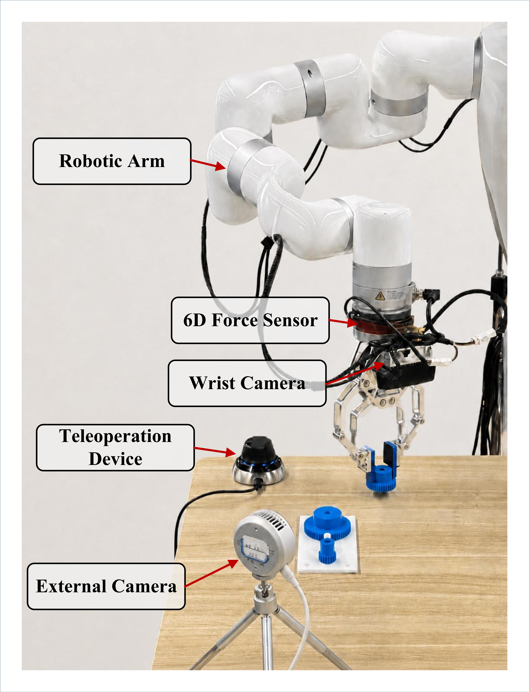

Vision-Language-Action (VLA) models have shown strong potential for general robotic manipulation, but contact-rich tasks still require timely action refinement using force/torque feedback. Existing force-aware VLA models usually align all modalities to a single low operating frequency, which discards high-frequency contact cues that are important for reactive action correction. Additionally, they use static fusion, which cannot adaptively balance visual context and force feedback across manipulation processes. To mitigate these issues, we propose FAVLA, a force-adaptive multi-rate VLA model that explicitly separates low-frequency visual-language reasoning from high-frequency force-conditioned action refinement. Based on the π₀-style VLM-action expert architecture, FAVLA uses a low-rate VLM to encode visual-language-force context and predict near-future force statistics, while a high-rate action expert refines action chunks using the latest force observations. To decide when to update actions, we introduce a Force-Adaptive Multi-rate Inference (FAMI) mechanism, which schedules the action expert's inference rate from predicted future force variance, keeping low-rate reasoning in stable phases and increasing update frequency near contact transitions. To decide how to use force, we design a Force-Guided Dynamic Fusion (FGDF) module, which injects high-frequency force features into the action expert and dynamically balances visual-semantic and force cues across manipulation stages. Extensive real-robot experiments on high-precision and contact-rich tasks show that FAVLA outperforms force-aware VLA baselines, achieving an average success rate of 88.8% and lower peak contact forces during manipulation.


